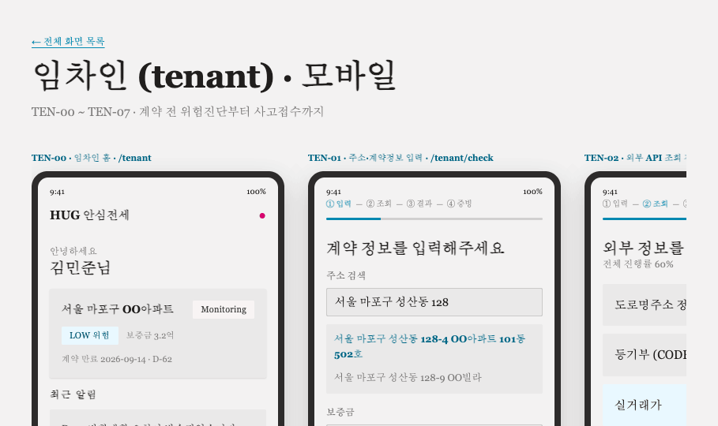
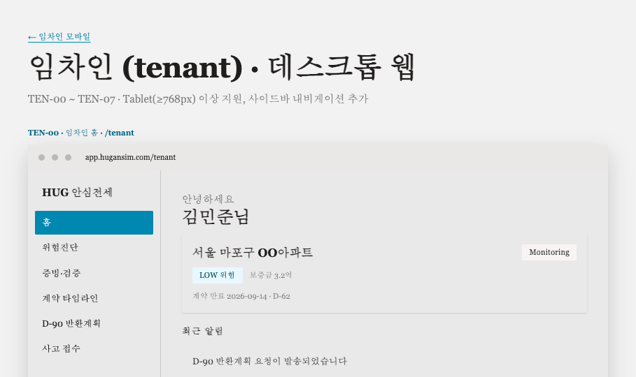
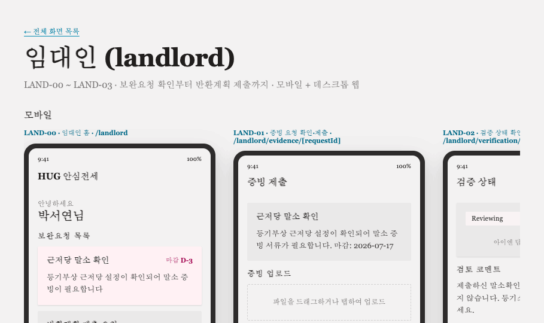
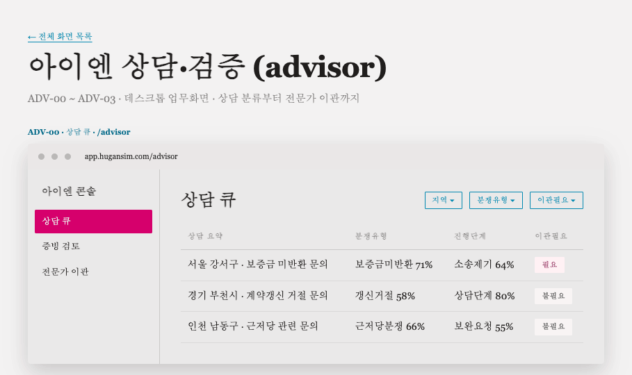
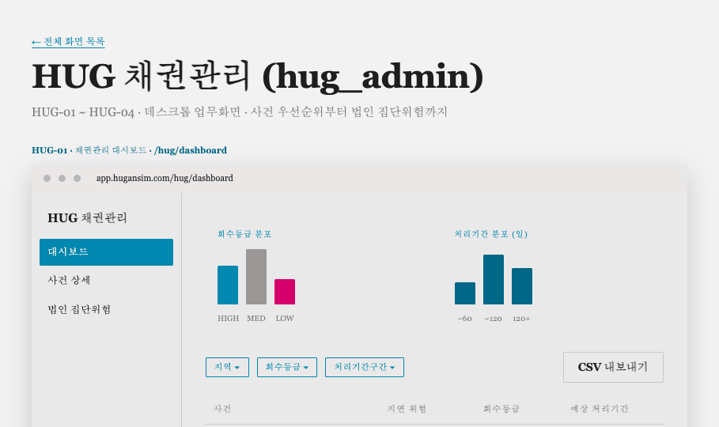

HUG × 아이엔 안심주거 생태계
HUG 안심전세 체인
Frontend UI/UX 디자인
개발기획 및 상세설계보고서 (2026-07-14) 기준 · 임차인 · 임대인 · 아이엔 · HUG
설계 원칙
근거·다음행동 우선
위험 점수를 단독으로 노출하지 않고, 근거와 다음 행동을 함께 제시합니다
데이터 신뢰성 표기
모든 조회 결과에 조회시각·출처·모델버전을 명시합니다
단순화된 블록체인 상태
Pending / Confirmed / Failed 3단계만 사용해 이해도를 높입니다
디바이스별 최적화
임차인·임대인은 모바일+웹, 아이엔·HUG는 데스크톱 업무화면 중심
4개 사용자군 · 20개 화면
tenant
8
임차인
TEN-00 ~ TEN-07
landlord
4
임대인
LAND-00 ~ LAND-03
advisor
4
아이엔 상담·검증
ADV-00 ~ ADV-03
hug_admin
4
HUG 채권관리
HUG-01 ~ HUG-04
임차인 (tenant) · 모바일
TEN-00 ~ TEN-07 · 위험진단 → 증빙·검증 → 계약 타임라인 → D-90 반환계획 → 사고 접수

임차인 (tenant) · 데스크톱 웹
TEN-00 ~ TEN-07 · 사이드바 내비게이션 추가, 콘텐츠 폭 확장

임대인 (landlord)
LAND-00 ~ LAND-03 · 보완요청 확인부터 반환계획 제출까지 · 모바일 + 데스크톱 웹

아이엔 상담·검증 (advisor)
ADV-00 ~ ADV-03 · 상담 분류부터 전문가 이관까지 · 데스크톱 업무화면

HUG 채권관리 (hug_admin)
HUG-01 ~ HUG-04 · 사건 우선순위부터 법인 집단위험까지 · 데스크톱 업무화면

감사합니다
HUG × 아이엔 안심주거 생태계 · Frontend UI/UX 디자인